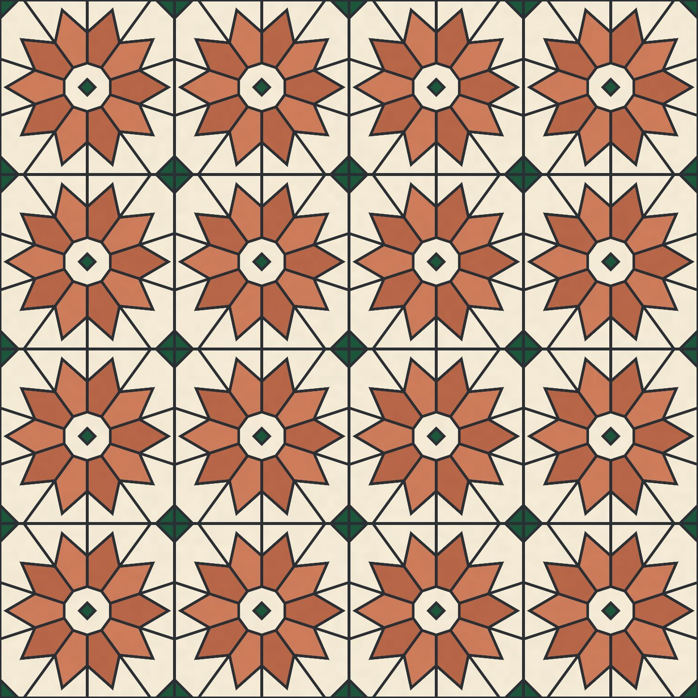

The person's grout, the model's look
The recorded exchange: the request, the tool activity, every image the tools returned to the model, and its reply. Expand tool activity to read the steps; open an image to see it full size.
- Edited the program by hand:
0.003 0.005 <joint smoothstepbecame0.007 0.009 <joint smoothstep. The edit went through the property the editor writes; it was not checked in, so the study reported the editor as dirty.
I thickened the grout myself in the editor. Look at what I changed and keep it — but check the small green diamonds: with the wider grout, are they still readable? Fix them if not.
Tool activity · 4 steps
Starting AI conversation
InspectStackSLStudy finished (156 ms)
CaptureRenderWindowRequest finished (42 ms)
Completed

You changed the final grout thresholds from 0.003 0.005 to 0.007 0.009. I’ve left your edit untouched.
In the live window, the small centre diamonds are still recognisably green, with distinct diamond silhouettes inside the cream medallions. The larger junction diamonds also remain readable, including their cross-shaped grout divisions.
The heavier grout hasn’t swallowed either detail, so no corrective edit was needed. Your current source also passes the compile check.
- Pressed Check in on the study card →
r5-95e30638631a“edited by hand”